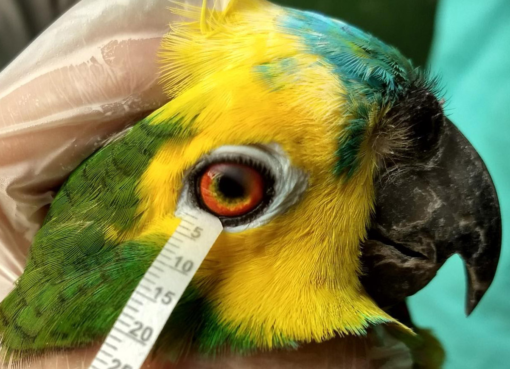
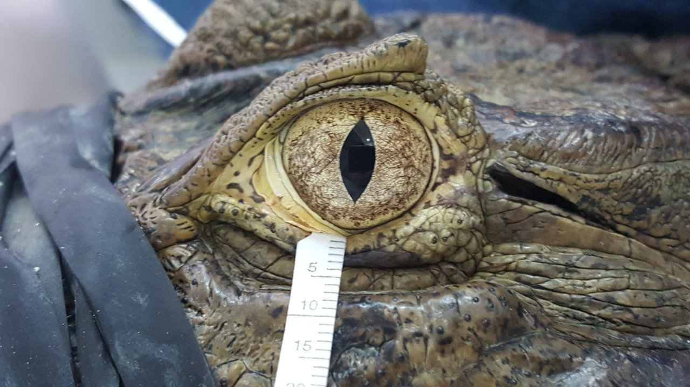
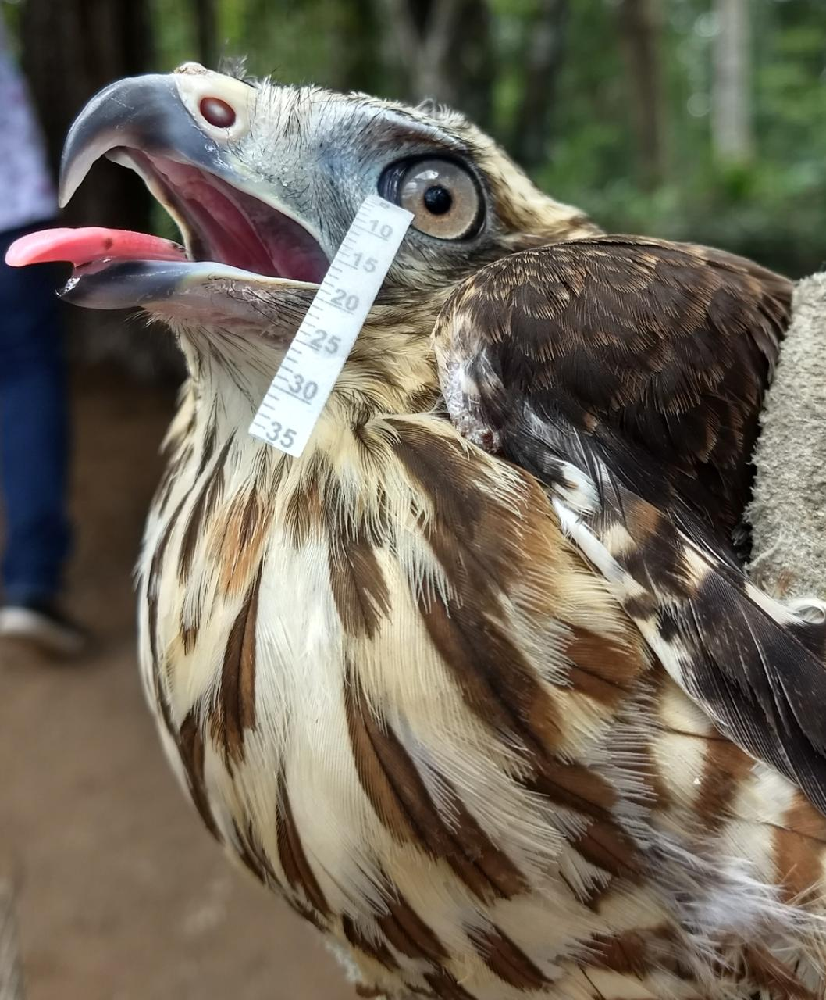
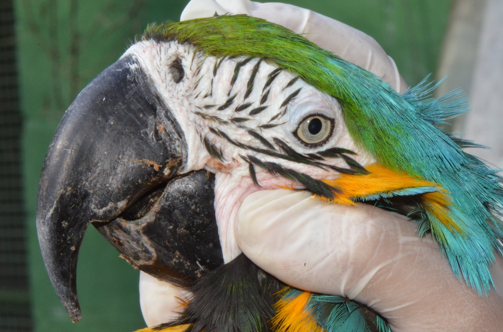
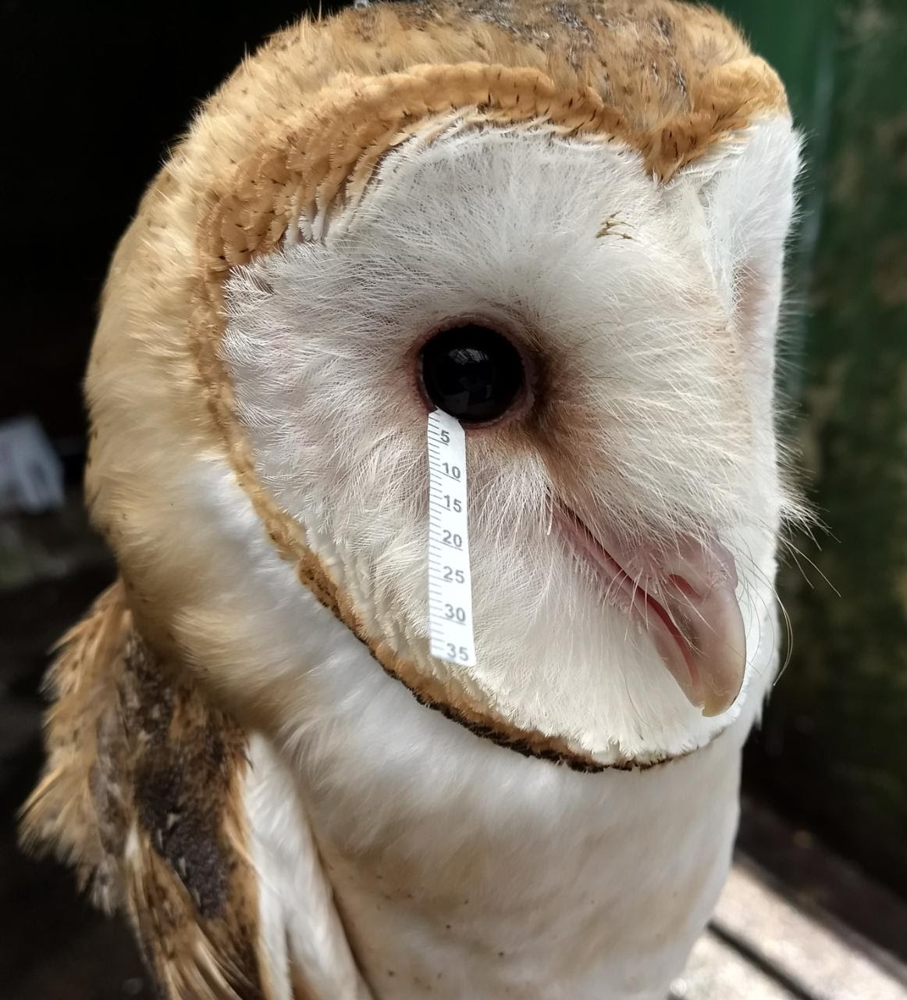
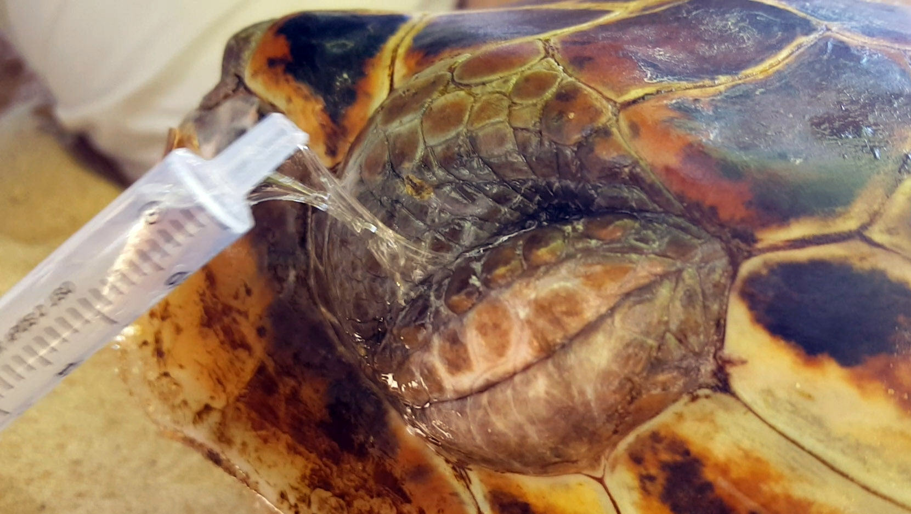
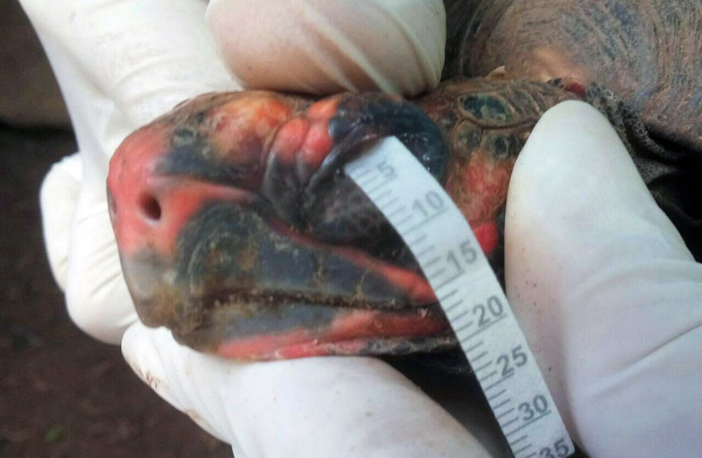

Bird and reptile tears aren’t so different from human tears
Vision is essential for the survival of most animal species and tears provide potentially life-saving protection for the eyes.A new first-of-its-kind study looks at the composition of bird and reptile tears and compares these findings to human tears.These results provide clues about tear evolution, as well as potential starting points for better eye treatments.
Bird and reptile tears aren’t so unlike our own, shows a new study in Frontiers in Veterinary Science.But the differences could provide insights into better ophthalmic treatments for humans and animals, as well as a clues into the evolution of tears across different species.
'Discovering how tears are able to maintain the ocular homeostasis, even in different species and environmental conditions, is crucial for understanding the evolution and adaptation processes, and is essential for the discovery of new molecules for ophthalmic drugs,' says first author Prof.Arianne P. Oriá, of the Federal University of Bahia, in Salvador, Brazil.
Tears play a critical role in maintaining healthy eyesight across species.But up to now, researchers have only studied tears in a short list of mammals, including humans, dogs, horses, monkeys and camels.To get a more complete picture of how tears work in other species, Oriá and her collaborators have now added seven species of birds and reptiles to this list.
'Although birds and reptiles have different structures that are responsible for tear production, some components of this fluid (electrolytes) are present at similar concentrations as what is found in humans,' explains Oriá.'But the crystal structures are organized in different ways so that they guarantee the eyes´ health and an equilibrium with the various environments.'
Oriá and her collaborators worked together with veterinarians from a conservation center, a wild animal care center and a commercial breeder to collect tear samples from healthy captive animals.The study was limited to animals that were kept as pets or as part of conservation efforts, and the researchers collected tears as part of the animals’ normal physical check-ups.
Comparison of Electrolyte Composition and Crystallization Patterns in Bird and Reptile Tears ► Read original article ► Download original article (pdf)
The animals in the study included macaws, hawks, owls and a type of parrot, as well as tortoises, caimans and sea turtles.For comparison, the authors also collected tears from 10 healthy human volunteers.
By looking at the composition of the tears, the authors found that all of the tear types contained similar amounts of electrolytes such as sodium and chloride, although bird and reptile tears had slightly higher concentrations.Owl and sea turtle tears also showed higher levels of urea and protein.
After measuring the composition of the tears, the authors also looked at the crystals that formed when the tear fluid dried out.Researchers can use this crystallization pattern to uncover certain types of eye disease, as well as other variations between tear types.
Although the different species had similar tear composition, surprisingly the crystals showed more variation.Sea turtle and caiman tear crystals were particularly unique, probably as an adaptation to their aquatic environments.
Tear research still only reflects a small number of species and this study was limited to captive animals.But future research of additional species could continue to expand our understanding of tear types, and also help guide better treatments for both animals and humans.
'This knowledge helps in the understanding of the evolution and adaption of these species, as well as in their conservation,' adds Prof.Oriá.
Collecting tears from Caiman (
Caiman latirostris ), Roadside hawk (
Rupornis magnirostris ), Blue-and-yellow macaw (
Ara ararauna ), Barn owl (
Tyto alba ), Turquoise-fronted amazon (
Amazona aestiva ), Loggerhead sea turtle (
Caretta caretta ), Red-footed tortoise (
Chelonoidis carbonaria) .All images: Arianne P. Oriá and coauthors
Original article: Comparison of Electrolyte Composition and Crystallization Patterns in Bird and Reptile Tears
REPUBLISHING GUIDELINES: Open access and sharing research is part of Frontiers’ mission.Unless otherwise noted, you can republish articles posted in the Frontiers news blog — as long as you include a link back to the original research.Selling the articles is not allowed.
Posted On: 2020-08-13T00:00:00
Posted By: K.E.D. Coan







Content Date: 2020-08-13
Download Date: 2021-07-10
Document ID: L0C04F3UK